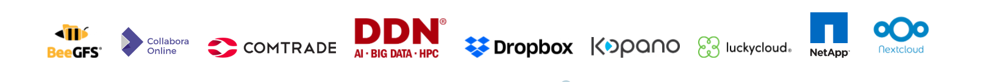

+++
title = "CS3 Conference 2024"
linkTitle = "cs32024"
+++
{{< blocks/cover title="" image_anchor="bottom" height="max" color="primary" >}}
{{< /blocks/cover>}}

{{< blocks/section color="primary" >}}
{{% blocks/feature icon="fa-calendar" title="11-13th March 2024" color="secondary" %}}
This year we commemorate the 10th anniversary of the conference!
{{% /blocks/feature %}}
{{% blocks/feature icon="fas fa-map-marker" title="CERN, Geneva, CH" color="secondary" %}}
This year the conference will happen at CERN, this is a way for all of us to mark the 10th anniversary of this event and of our community
{{% /blocks/feature %}}
{{% blocks/feature icon="fas fa-project-diagram" title="Social Networking" color="secondary" %}}
Take the opportunity to exchange ideas with other members of the community and enjoy some (virtual) coffess together.
{{% /blocks/feature %}}
{{< /blocks/section>}}